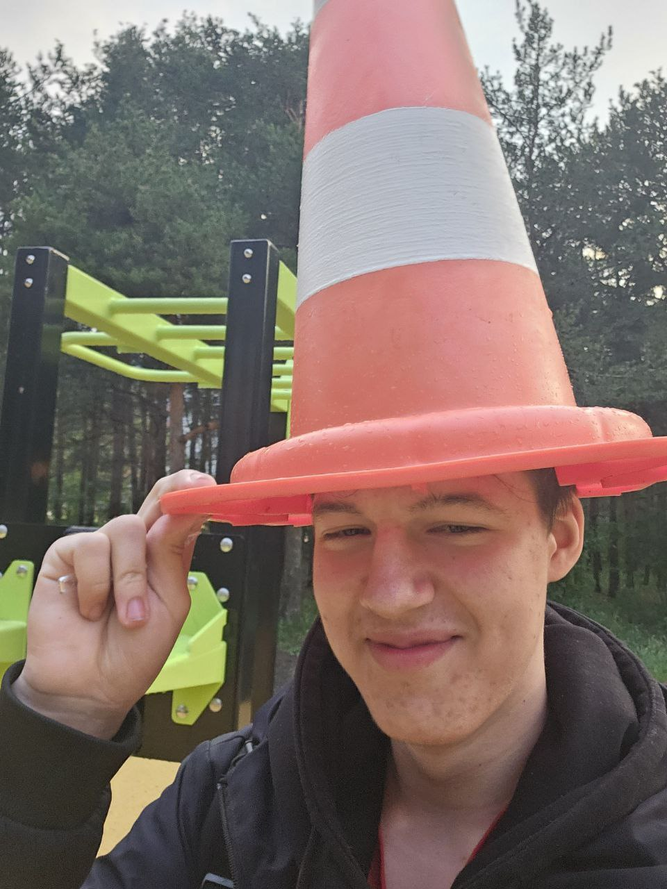

Isikuandmed
Nimi: Martin Sild
Eriala
Tarkvaraarendaja
Keeled
- Eesti keel
- Inglise keel
- Vene keel
IT Tehnoloogiad
C#, JS, TS, Vue, Nuxt, Tailwindcss, PHP, Go
Minu Oskused
POLE
Minu parimad projektid
issue1
Minimal Viable Product (минимально жизнеспособный продукт) — тестовая версия товара, услуги или сервиса с минимальным набором функций (иногда даже одной), которая несет ценность для конечного потребителя. MVP создают для тестирования гипотез и проверки жизнеспособности задуманного продукта, насколько он будет ценным и востребованным на рынке. Результаты тестирования минимально жизнеспособного продукта и обратная связь от целевой аудитории помогают понять, стоит ли развивать проект дальше, какие изменения следует внести в стратегию, а что оставить в первоначальном виде.